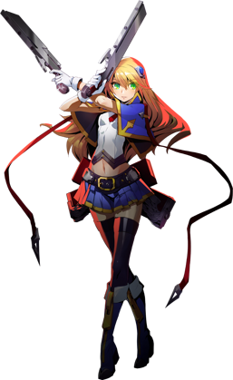

◈ NOL LIEUTENANT · GUN-KATA
Noel
BlazBlue: Entropy Effect — Персонаж
75
Атака
45
Защита
80
Скорость
65
HP
★☆☆
Сложность
Дальний
Тип боя
Noel Vermillion — бывший лейтенант NOL, владеющая парными пистолетами Arcus Diabolus: Bolverk. Она сочетает Gun-kata с высокой мобильностью, быстро перемещаясь по полю боя и обрушивая на врагов шквальный огонь. Уникальная механика Quick Reload позволяет ей восстанавливать MP и поддерживать постоянное давление.
Quick Reload
Precision Strike
Gun-Kata

01
Досье персонажа
Имя
Noel Vermillion
Титул
Gun-Kata Master / NOL Lieutenant
Оружие
Arcus Diabolus: Bolverk (парные пистолеты)
База HP / Атака
980 / 160 (28 потенциалов, +560%)
Роль
Дальнобойный боец / Мобильный стрелок
Особенность
Quick Reload, Precision Strike, высокая мобильность
Боевые характеристики
ATK75
DEF45
SPD80
HP65
RANGE90
SKILL70
Талант (Talent)
Precision Strike
При попадании по врагу с дальней дистанции увеличивает общий урон на +50% (или +60%). Бонус статичен и не зависит от точного расстояния — достаточно находиться на установленной дистанции. Учитывает только горизонтальное расстояние. Идеально подходит для Kokonoe, Lambda, Rachel и других дальнобойных прототипов.
При попадании по врагу с дальней дистанции увеличивает общий урон на +50% (или +60%). Бонус статичен и не зависит от точного расстояния — достаточно находиться на установленной дистанции. Учитывает только горизонтальное расстояние. Идеально подходит для Kokonoe, Lambda, Rachel и других дальнобойных прототипов.
02
Навыки и приёмы
Quick Reload
Уникальная механика
[Ground] Up + Skill: Полностью восстанавливает MP. Перезарядка 18-20 секунд.
Ключевая механика для поддержания SP-навыка Zero-Gun: Sleipnir.
Позволяет быстро восстанавливать MP и поддерживать высокий темп боя.
Shroud Fall
Legacy Skill 1
Приоритизирует дальних врагов: захватывает цель и выпускает несколько быстрых взрывов.
Урон и дальность растут с уровнем. Позволяет безопасно уничтожать врагов вне досягаемости прототипа.
Quick Reload [EX]
Legacy Skill 2
Мгновенно восстанавливает 100 MP. Позволяет ещё быстрее накапливать SP для использования
Zero-Gun: Sleipnir и других способностей. Восстановленное MP увеличивается с уровнем.
Zero-Gun: Sleipnir
SP Skill
Основной SP-навык Noel. Расходует SP для нанесения огромного урона.
Один из двух основных стилей игры Noel — постоянное поддержание Sleipnir через Quick Reload.
Требует 200 MP для 60 SP, поэтому Quick Reload критически важен.
[Ground] Attack — 4-hit Combo
Базовая атака
Базовая комбинация из 4 частей, всего 5 ударов. Первый удар — выстрел вперёд с хорошей
дальностью и средним уроном. Быстрые и мобильные атаки позволяют постоянно двигаться и уклоняться.
[Airborne] Attack
Воздушная атака
Noel быстро стреляет в воздухе, сохраняя мобильность. Можно комбинировать с Dash для
уклонения и продолжения давления. Воздушные атаки также выигрывают от Precision Strike.
Dash Attack
Рывок + Атака
Во время Dash Noel выполняет скользящий выстрел. После наземной атаки можно нажать Dash,
чтобы проскользнуть за спину врага с увеличенным окном неуязвимости.
Discharge
Потенциал
[Ground] Hold Attack превращается в мощный AoE-взрыв, наносящий огромный урон.
Отличный инструмент для зачистки групп врагов и нанесения burst-урона по боссам.
Type IV: Flash Suppressor
Потенциал
[Ground] Hold Down + Attack x3: Noel выполняет удар ногой вверх, плечевой таран и
завершает выстрелом. Мощное комбо для ближнего боя с высоким уроном.
Universal Enhancement: Over-Exhaust
Универсальное улучшение
Позволяет использовать MP сверх лимита (Over-Exhaust) для усиления навыков.
Особенно полезно для Noel, так как позволяет быстрее восстанавливать SP для Sleipnir.
03
Основные механики
Quick Reload — управление ресурсами
Уникальная механика Noel позволяет ей полностью восстанавливать MP каждые 18-20 секунд.
Это делает её одной из лучших для поддержания SP-навыков, особенно Zero-Gun: Sleipnir.
При 150 MP, использовании, перезарядке и повторном использовании вы накопите достаточно SP для Sleipnir.
Даже после Over-Exhaust (-200 SP) потребуется всего 330 MP и одна перезарядка для полного восстановления.
Соотношение MP к SP: 10/3.
Precision Strike
Талант Noel даёт +50% (или +60%) урона при атаке с дальней дистанции.
Бонус активируется при достижении определённого горизонтального расстояния до цели.
Идеально сочетается с её дальнобойным стилем игры.
Мобильность и уклонение
Noel обладает высокой скоростью передвижения и может использовать Dash после атак для
уклонения. Dash имеет увеличенное окно неуязвимости, позволяя избегать урона и
быстро менять позицию.
Цикл MP/SP
Благодаря Quick Reload Noel может постоянно поддерживать высокий уровень SP.
Это позволяет ей чаще использовать мощные SP-навыки и доминировать на поле боя
за счёт постоянного давления.
Gun-Kata
Стиль боя Noel сочетает акробатику и стрельбу. Она постоянно двигается, уклоняется
и ведёт огонь, что делает её сложной мишенью и позволяет контролировать темп боя.
04
Советы по игре
- 🔫Всегда следи за кулдауном Quick Reload. Используй его как только становится доступным, чтобы максимизировать восстановление MP и накопление SP.
- 🔫Держись на расстоянии для Precision Strike. Талант даёт огромный бонус к урону, поэтому старайся атаковать врагов с дальней дистанции.
- 🔫Используй Dash для уклонения. Dash после атаки даёт увеличенное окно неуязвимости — идеально для избегания контратак.
- 🔫Shroud Fall — отличный инструмент для дальних целей. Используй его для уничтожения снайперов и врагов на платформах, не подставляясь под удар.
- 🔫Не забывай про Over-Exhaust. Возможность тратить MP сверх лимита позволяет Noel поддерживать Sleipnir даже в самых затяжных боях.
- 🔫Discharge — твой AoE-инструмент. Заряженная атака с этим потенциалом отлично подходит для зачистки групп врагов.
- 🔫Комбинируй воздушные и наземные атаки. Высокая мобильность Noel позволяет ей постоянно менять позицию и избегать урона, оставаясь в нападении.